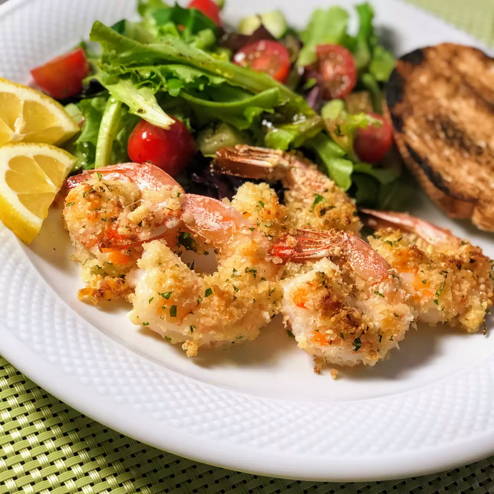

Delicious crispy shrimp coated in a bread crumb-Parmesan mixture. My family can't get enough of it! I would suggest doubling the recipe if you have very large eaters because this is addictive! Serve with pasta and salad.
Preheat the oven to 350 degrees F (175 degrees C). Spray a 9x13-inch glass casserole dish with nonstick cooking spray.
Combine bread crumbs, Parmesan cheese, parsley, and garlic powder in a large resealable plastic bag. Seal and shake to mix ingredients together. Add shrimp and shake to coat.
Lay shrimp flat in the prepared baking dish. Sprinkle with any bread crumb mixture remaining in the bag. Drizzle melted butter over the top.
Bake in the preheated oven until starting to crisp, 15 to 20 minutes. Switch to broil setting until topping is light brown, 2 to 3 minutes.
You can use panko bread crums if you like.